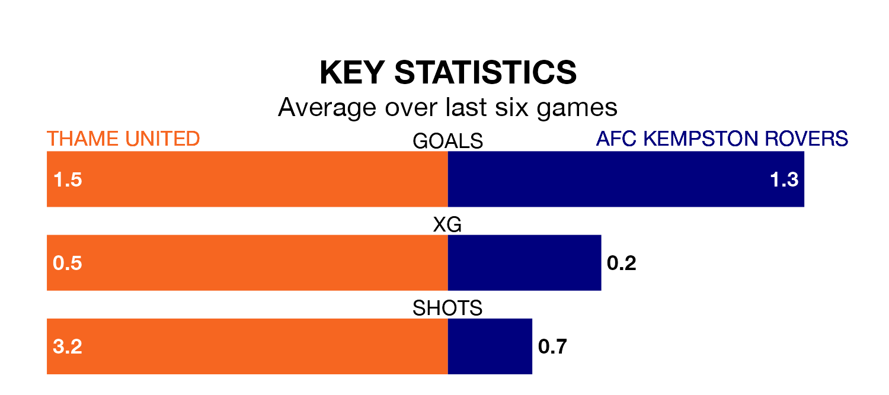

Struggling Thame United face AFC Kempston Rovers at the ASM Stadium on Saturday looking to build on a win in their last league outing.
After securing all three points with a 4-3 victory over Welwyn Garden City on January 13, Thame sit 18th in Southern League Division One Central.
They travel to play a Kempston Rovers side 19th in the standings, who were held in their last match, 0-0 against Aylesbury United, on Tuesday.
Thame are in disappointing form in Southern League Division One Central, with two wins and four losses from their last six games.
With a win and two draws over that period, Kempston Rovers' form is slightly worse – they have taken five points from 18, compared to United's six.
In the last five years, Thame and Kempston Rovers have played each other on five occasions. Thame won three of them and Kempston Rovers two.
On average, Thame scored 1.8 goals and Kempston Rovers 1.2 in those matches.
Their last meeting was on October 28, when Kempston Rovers won 1-0 at home.
With 18 goals in 18 games so far this season, the away side are the league's lowest scorers with 1.0 goals per game. And they are conceding more than average, letting in 40 goals at a rate of 2.2 per game.
The hosts are also below average scorers, with 1.2 goals per game, compared to a league average of 1.8. They have conceded 2.1 goals per game.
Updated: 08:51 (UTC), 25/01/24